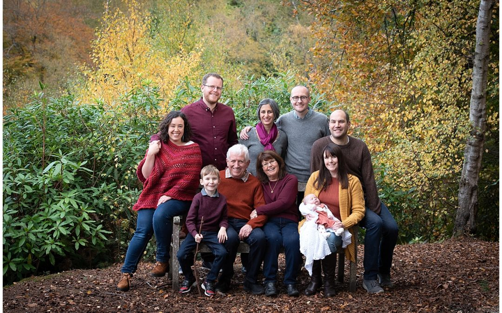
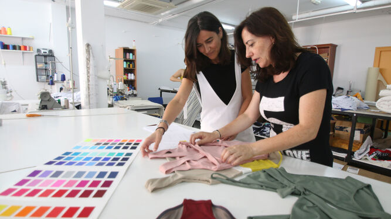

Acerca
¿Quiénes somos?
Petit Nunú nace en la ciudad de La Plata en el año 2021 como un proyecto familiar, orientado a la creación de vestimenta para chicos que cumpla con los dos objetivos primordiales planteados por nuestros principios: Por un lado crear ropa ambientalmente responsable y por el otro promover a diseñadores locales que quieran dejar su impronta en el mundo de la moda. Como empresa familiar, nuestra dedicación esta en los pequeños detalles, en asegurarnos que nuestros empleados y colaboradores se sientan siempre comodos y a gusto trabajando con nosotros
¿Por qué crear una marca de ropa?
Nuestra Visión de crear una marca propia nace de la necesidad de ayudar a nuestra ciudad durante la pandemia de COVID-19. Sabemos que muchos negocios han tenido que cerrar y que muchas familias se han quedado sin trabajo, pero los más afectados de todo esto son los chicos. Es por eso que en estos momentos de incertidumbre y angustia, nosotros queremos que a los más pequeños no les falte un abrigo o un par de zapatillas. Por eso nuestra marca se centra en ofrecer precios accesibles, a la vez que colaboramos con provedores, diseñadores y productores locales y muchas veces pequeños, que vieron sus ingresos perjudicados por la crisis
¿Cómo puedo ayudar?
Con tu compra de cualquier producto de Petit Nunú, ya estas colaborando con cientos de familias que trabajan dia y noche para poder ofrecer productos de calidad a precios accesibles para todo el público. Sin embargo, si está interesado en ofrecer una ayuda extra para chicos y chicas en situación de necesidad. Considere suscribirse a nuestro Newsletter para recibir información de nuestras campañas de donación, colectas y otras novedades sobre la familia Petit Nunú
 Suscríbase a nuestro Newsletter para obtener más información
Suscríbase a nuestro Newsletter para obtener más información